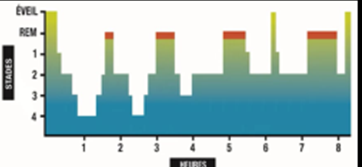
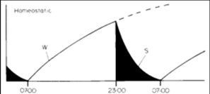
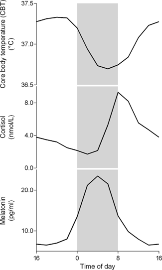
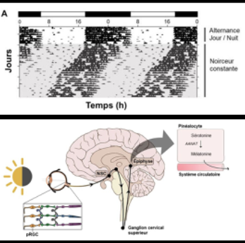
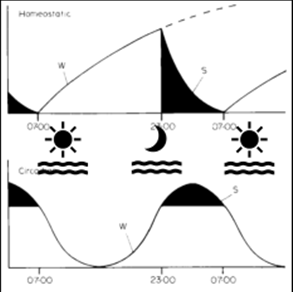
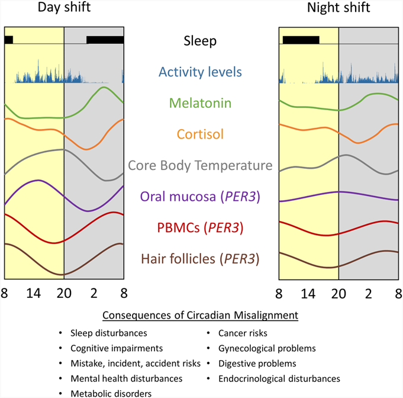

Sommeil et rythmes biologiques
Le sommeil est un état physiologique essentiel à la réparation cellulaire, à l'immunité et à la consolidation de la mémoire. Il est régulé par deux mécanismes interreliés : l'équilibre éveil-sommeil (homéostasie) et les rythmes circadiens (cycle d'environ 24 h). La compréhension de ces mécanismes est la base pour analyser les effets des horaires atypiques très présents en mine.
Table des matières
- Organisation du sommeil
- Biologie et fonctions du sommeil
- Mécanismes de régulation
- Rythmes circadiens
- Désynchronisation circadienne
- Application terrain
- Ressources
Organisation du sommeil
Le sommeil est un état physiologique périodique pendant lequel la vigilance est suspendue et la réactivité aux stimulations amoindrie.
Cinq stades
| Stade | Type | Proportion |
|---|---|---|
| 1 | Endormissement | 5 % |
| 2 | Sommeil léger | 40 à 50 % |
| 3-4 | Sommeil profond | 10 à 20 % |
| REM | Sommeil paradoxal (Rapid Eye Movement) | 20 à 25 % |
Les stades s'alternent en cycles d'environ 90 à 120 minutes.
- Sommeil profond plus important en début de nuit.
- Sommeil paradoxal plus long en fin de nuit.
{kind=link}

Toucher l'image pour l'agrandirBiologie et fonctions du sommeil
Le sommeil est essentiel à
- La réparation cellulaire et la croissance (↑ hormone de croissance).
- La défense immunitaire (↑ activité immunitaire).
- La consolidation de la mémoire à long terme.
Conséquences du manque de sommeil
- Perturbations physiques et mentales.
- Privation complète : peut être mortelle.
Quantité optimale
- Long terme : 7 heures minimum pour un fonctionnement optimal.
- Court terme : réduction de 8 à 6 h a un impact marginal.
- Manque de sommeil compensé principalement par augmentation du sommeil profond.
Mécanismes de régulation
Deux mécanismes interagissent.
Équilibre éveil-sommeil (homéostasie)
- Augmentation des besoins de dormir en fonction de la durée d'éveil.
- Diminution des besoins après une bonne période de sommeil.
- Mécanismes physiologiques : accumulation d'adénosine.
{kind=link}

Toucher l'image pour l'agrandirRégulation circadienne
- Variations de la propension à dormir selon le moment de la journée.
- Indépendante de la durée d'éveil (en partie).
Rythmes circadiens
Le corps humain est sous le contrôle de plusieurs rythmes biologiques
| Rythme | Durée |
|---|---|
| Circadien | Environ 24 heures |
| Infradien | > 28 heures |
| Ultradien | < 20 heures |
Caractéristiques
- Observables par fluctuations de l'excrétion d'hormones, de la fréquence cardiaque de repos, de la pression artérielle, de la température corporelle.
- Persistent en l'absence de signaux temporels externes (origine endogène).
- Capacité à se synchroniser à l'environnement (zeitgebers).
{kind=link}

Toucher l'image pour l'agrandirFonction du rythme circadien
Chez l'humain, espèce diurne, le rythme synchronise les processus biologiques au cycle jour-nuit
- Nuit : mélatonine élevée, température basse, cortisol bas en début de nuit, activité cardiaque réduite, leptine élevée. Facilite le sommeil et la récupération.
- Jour : mélatonine basse, température élevée, cortisol élevé à l'éveil, activité cardiaque augmentée, pics de ghréline. Permet le fonctionnement optimal.
Contrôle endogène
Le rythme circadien est sous le contrôle du noyau suprachiasmatique (NSC) dans l'hypothalamus, l'horloge biologique maîtresse.
- Synchronise les rythmes circadiens.
- Rythmicité assurée par des gènes impliqués dans une boucle de rétrocontrôle d'environ 24 h.
L'expérience hors du temps de Michel Siffre (1962) (60 jours seul dans une grotte) a montré que
- La période endogène est proche de 24 h, mais légèrement plus longue (environ 24 h 30 min).
- Un décalage graduel se produit sans signaux temporels.
Contrôle exogène
Capacité de synchronisation grâce aux signaux temporels (zeitgebers)
- Variation de luminosité.
- Variation de température.
- Repas, contacts sociaux.
{kind=link}

Toucher l'image pour l'agrandirDésynchronisation circadienne
En situation optimale, il y a synchronisation entre
- Mécanisme d'équilibre éveil-sommeil.
- Rythmes circadiens.
- Environnement externe.
Une désynchronisation circadienne survient quand
- La mélatonine est désynchronisée de la période de sommeil.
- L'amplitude des rythmes circadiens est réduite et distordue (ex. mélatonine et cortisol).
{kind=link}

Toucher l'image pour l'agrandir{kind=link}

Toucher l'image pour l'agrandirC'est ce qui se produit notamment lors du travail de nuit, du décalage horaire et des rotations rapides d'horaires. Voir Horaires de travail atypiques pour les conséquences professionnelles.
Application terrain
La compréhension de la régulation du sommeil est essentielle pour le secteur minier qui mobilise massivement des horaires atypiques.
Réalité minière
- Quarts de jour, soir, nuit.
- Quarts de 12 h fréquents.
- Rotations 4-3, 7-7, 14-14 (FIFO).
- Camps en région éloignée.
Enjeux liés au sommeil
- Désynchronisation circadienne marquée pour les travailleurs de nuit et en rotation rapide.
- Dette de sommeil cumulée.
- Sommeil de jour souvent fractionné et de moindre qualité.
- Difficulté à dormir en camp (bruit, partage de chambres).
Cibles de prévention spécifiques en mine
| Cible | Levier |
|---|---|
| Favoriser le sommeil au camp | Chambres calmes, rideaux opaques, climatisation, isolation des collègues |
| Aménager les transitions de quart | Sieste avant le premier quart de nuit, pause post-quart |
| Limiter les rotations rapides | Préférer rotations longues (semaine+) à rotations très courtes |
| Sensibiliser les travailleurs | Hygiène du sommeil, alimentation, exposition lumineuse |
| Reconnaître les troubles | Repérage de la somnolence, du sommeil non récupérateur |
Coordination avec la sécurité
Le sommeil insuffisant est un facteur d'accident reconnu. Voir aussi le wiki Sécurité industrielle pour le volet accidents et fatigue, et le wiki SST psychosociale pour les effets sur la santé mentale et le syndrome d'épuisement.
Ressources
| Document | Type | Source |
|---|---|---|
| Cours SST 1162 - S9 - Sommeil et rythmes biologiques | Cours | UQAT |
| Borbély et Achermann, modèle deux-processus | Article | 1992, 2000 |
| Dibner et al., 2010 (chronobiologie) | Article | Revue scientifique |
| INSPQ - Horaires atypiques de travail | Rapport | INSPQ |
Articles wiki connexes
Pages qui pointent ici (6)
- 🏠 Wiki Ergonomie, mines Ergonomie
- 🚀 Démarrage rapide - Superviseur, contremaître Ergonomie
- Aménagement des horaires Ergonomie
- Analyse Siffre (1962) SST psychosociale
- Contraintes Ergonomie
- Horaires de travail atypiques Ergonomie